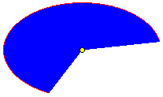

|
The BeOS draws text one pixel above the logical baseline to maintain compatibility with an earlier version of one of our most commonly-used font rasterizers. This affects both fonts and BShapes representing glyphs (see BFont::GetGlyphShapes(). To draw text at the right place, add one to the Y coordinate when calling MovePenTo() or specifying a BPoint at which to begin drawing.
For a font that's read from left-to-right, a series of simple DrawString() calls (with no point specified) will produce a continuous string. For example, these two lines of code,
DrawString("tog");
DrawString("ether");
will produce the same result as this one,
DrawString("together");
except if the spacing mode is B_STRING_SPACING. Under B_STRING_SPACING, character placements are adjusted keeping the string width constant. The adjustments are contextually dependent on the string and may therefore differ depending on whether there are two strings ("tog" and "ether") or just one ("together"). If a delta argument is provided, DrawString() adds the additional amounts specified in the escapement_delta structure to the width of each character. This structure has two fields:
float nonspace
float space
When drawing to the screen, DrawString() uses antialiasing—unless the BView's font disables it or the font size is large enough (over 1,000.0 points) so that its benefits aren't required. Antialiasing produces colors at the margins of character outlines that are intermediate between the color of the text (the BView's high color) and the color of the background against which the text is drawn. When drawing in B_OP_COPY mode, antialiasing requires the BView's low color to match the background color. It's much faster to draw a string in B_OP_COPY mode than in any other mode. If you draw the same string repeatedly in the same location in B_OP_OVER mode without erasing, antialiasing will produce different, and worse, results each time as the intermediate color it previously produced is treated as the new background each time. Antialiasing doesn't produce pleasing results in B_OP_SELECT mode. This is a graphical drawing function, so any character that doesn't have an escapement or a visible representation (including white space) is replaced by an undefined character that can be drawn (currently an empty box). This includes all control characters (those with values less than B_SPACE, 0x20). DrawString() doesn't erase before drawing. See also: MovePenBy(), SetFontName(), the BFont class
FillArc() see StrokeEllipse()
FillBezier() see StrokeBezier()
FillEllipse() see StrokeEllipse()
FillPolygon() see StrokePolygon()
FillRect() see StrokeRect()
FillRegion()
Fills the region with the pattern specified by aPattern—or, if no pattern is specified, with the current high color. Filling a region is equivalent to filling all the rectangles that define the region. See also: the BRegion class
FillRoundRect() see StrokeRoundRect()
FillTriangle() see StrokeTriangle()
StrokeEllipse
StrokeBezier() , FillBezier()
These functions draw a third degree Bezier curve. StrokeBezier() strokes a line along the path of the curve; the width of the line is determined by the current pen size. FillBezier() fills in the region defined by the path of the curve and the line joining the two endpoints. controlPoints points to an array of the four points for the curve. Both functions draw using the pattern specified by aPattern—or, if no pattern is specified, in the current high color. Neither function alters the current pen position. See also: SetPenSize(), StrokeRoundRect() See also: StrokeEllipse()
StrokeEllipse() , FillEllipse() , StrokeArc() , FillArc()
These functions draw all or part of the ellipse that's inscribed in rect or that has its center at center and has horizontal and vertical radii xRadius and yRadius. The ellipse is always aligned with the x and y axes. A more flexible curve-drawing mechanism is given by StrokeBezier() and FillBezier(). StrokeEllipse() strokes a line around the entire perimeter of the ellipse and FillEllipse() fills the area the ellipse encloses. StrokeArc() and FillArc() stroke and fill a section of the ellipse, starting at angle (where 0 ° points right along the x-axis) and proceeding (counterclockwise) span degrees. In the illustration below, the red arc is the result of StrokeArc() with an angle of 10 ° and span of 235 °; the blue area is the same arc filled through FillArc(). The center of the ellipse (the yellow dot) is drawn for reference. 
For the stroking functions, the width of the stroked line is determined by the current pen size. All functions draw using aPattern or, if no pattern is specified, the current high color. The functions neither depend on nor alter the current pen position.
StrokeLine()
Draws a straight line between the start and end points—or, if no starting point is given, between the current pen position and end point—and leaves the pen at the end point. This function draws the line using the current pen size and the specified pattern. If no pattern is specified, the line is drawn in the current high color. The points are specified in the BView's coordinate system. See also: SetPenSize(), BeginLineArray()
StrokePolygon() , FillPolygon()
These functions draw a polygon with an arbitrary number of sides. StrokePolygon() strokes a line around the edge of the polygon using the current pen size. If a pointList is specified rather than a BPolygon object, this function strokes a line from point to point, connecting the first and last points if they aren't identical. However, if the isClosed flag is false, StrokePolygon() won't stroke the line connecting the first and last points that define the BPolygon (or the first and last points in the pointList). This leaves the polygon open—making it not appear to be a polygon at all, but rather a series of straight lines connected at their end points. If isClosed is true, as it is by default, the polygon will appear to be a polygon, a closed figure. FillPolygon() is a simpler function; it fills in the entire area enclosed by the polygon. Both functions must calculate the frame rectangle of a polygon constructed from a point list—that is, the smallest rectangle that contains all the points in the polygon. If you know what this rectangle is, you can make the function somewhat more efficient by passing it as the rect parameter. Both functions draw using the specified pattern—or, if no pattern is specified, in the current high color. Neither function alters the current pen position. See also: SetPenSize(), the BPolygon class
StrokeRect() , FillRect()
These functions draw a rectangle. StrokeRect() strokes a line around the edge of the rectangle; the width of the line is determined by the current pen size. FillRect() fills in the entire rectangle. Both functions draw using the pattern specified by aPattern—or, if no pattern is specified, in the current high color. Neither function alters the current pen position. See also: SetPenSize(), StrokeRoundRect()
StrokeRoundRect() , FillRoundRect()
These functions draw a rectangle with rounded corners. The corner arc is one-quarter of an ellipse, where the ellipse would have a horizontal radius equal to xRadius and a vertical radius equal to yRadius. Except for the rounded corners of the rectangle, these functions work exactly like StrokeRect() and FillRect(). Both functions draw using the pattern specified by aPattern—or, if no pattern is specified, in the current high color. Neither function alters the current pen position. See also: StrokeRect(), StrokeEllipse()
StrokeShape() , FillShape()
These functions draw a shape. StrokeShape() strokes a line around the edge of the shape; the width of the line is determined by the current pen size. FillShape() fills in the entire shape. Both functions draw using the pattern specified by aPattern—or, if no pattern is specified, in the current high color. Neither function alters the current pen position. See also: SetPenSize()
StrokeTriangle() , FillTriangle()
These functions draw a triangle, a three-sided polygon. StrokeTriangle() strokes a line the width of the current pen size from the first point to the second, from the second point to the third, then back to the first point. FillTriangle() fills in the area that the three points enclose. Each function must calculate the smallest rectangle that contains the triangle. If you know what this rectangle is, you can make the function marginally more efficient by passing it as the rect parameter. Both functions do their drawing using the pattern specified by aPattern—or, if no pattern is specified, in the current high color. Neither function alters the current pen position. See also: SetPenSize()
Other Drawing FunctionsThe functions below are BView drawing-related functions which do not fall under the rubric of Primitive Drawing Functions. The functions in this section can be used to draw bitmaps, to define sequences of more primitive drawing commands, and for some other more specialized purposes.
AddLine() see BeginLineArray()
AppendToPicture() see BeginPicture()
BeginLineArray() , AddLine() , EndLineArray()
These functions provide a more efficient way of drawing a large number of lines than repeated calls to StrokeLine(). BeginLineArray() signals the beginning of a series of up to count AddLine() calls; EndLineArray() signals the end of the series. Each AddLine() call defines a line from the start point to the end point, associates it with a particular color, and adds it to the array. The lines can each be a different color; they don't have to be contiguous. When EndLineArray() is called, all the lines are drawn—using the then current pen size—in the order that they were added to the array. These functions don't change any graphics parameters. For example, they don't move the pen or change the current high and low colors. Parameter values that are in effect when EndLineArray() is called are the ones used to draw the lines. The high and low colors are ignored in favor of the color specified for each line. The count passed to BeginLineArray() is an upper limit on the number of lines that can be drawn. Keeping the count close to accurate and within reasonable bounds helps the efficiency of the line-array mechanism. It's a good idea to keep it less than 256; above that number, memory requirements begin to impinge on performance. See also: StrokeLine()
BeginPicture() , AppendToPicture() , EndPicture()
BeginPicture() starts a new "picture recording" session: Subsequent drawing instructions invoked upon the view are recorded in the BPicture argument. AppendToPicture() does the same, but doesn't clear the argument first—it tacks additional instructions on to the end of the BPicture. EndPicture() ends the recording session; it returns the object that was passed to BeginPicture() or AppendToPicture(). While it's recording a picture, the BView doesn't display anything to the screen. To render the drawing, you use the DrawPicture() function. The picture captures only primitive graphics operations such as DrawString(), FillArc(), and SetFont(). Furthermore, only instructions performed by this view are recorded; the drawing done by the view's children is not recorded. A BPicture can be recorded only if the BView is attached to a window. The window can be off-screen and the view itself can be hidden or reside outside the current clipping region. See also: the BPicture class, DrawPicture()
ClearViewBitmap() see SetViewBitmap()
ClearViewOverlay() see SetViewOverlay()
CopyBits()
Copies the image displayed in the source rectangle to the destination rectangle, where both rectangles lie within the view and are stated in the BView's coordinate system. If the two rectangles aren't the same size, the source image is scaled to fit. If not all of the destination rectangle lies within the BView's visible region, the source image is clipped rather than scaled. If not all of the source rectangle lies within the BView's visible region, only the visible portion is copied. It's mapped to the corresponding portion of the destination rectangle. The BView is then invalidated so its Draw() function will be called to update the part of the destination rectangle that can't be filled with the source image. The BView must be attached to a window.
DrawPicture() , DrawPictureAsync()
Draws the previously recorded picture at the current pen position—or at the specified point in the BView's coordinate system. The point or pen position is taken as the coordinate origin for all the drawing instructions recorded in the BPicture. The last form of the method plays a picture from an arbitrary offset of a file. The two functions differ in only one respect: DrawPicture() waits for the Application Server to finish rendering the image before it returns. DrawPictureAsync() doesn't wait; it passes the image to the server and returns immediately. The latter function can be more efficient in some cases—for example, you might use an asynchronous function to draw several bitmaps and then call Sync() to wait for them all to finish rather than wait for each one individually: Nothing that's done in the BPicture can affect anything in the BView's graphics state—for example, the BPicture can't reset the current high color or the pen position. Conversely, nothing in the BView's current graphics state affects the drawing instructions captured in the picture. The graphics parameters that were in effect when the picture was recorded determine what the picture looks like. See also: BeginPicture(), the BPicture class
EndLineArray() see BeginLineArray()
EndPicture() see AppendToPicture()
Flush() , Sync()
These functions flush the window's connection to the Application Server. If the BView isn't attached to a window, Flush() does nothing.
For reasons of efficiency, the window's connection to the Application Server is buffered. Drawing instructions destined for the server are placed in the buffer and dispatched as a group when the buffer becomes full. Flushing empties the buffer, sending whatever it contains to the server, even if it's not yet full. The buffer is automatically flushed on every update. However, if you do any drawing outside the update mechanism—in response to interface messages, for example—you need to explicitly flush the connection so that drawing instructions won't languish in the buffer while waiting for it to fill up or for the next update. You should also flush it if you call any drawing functions from outside the window's thread. Flush() simply flushes the buffer and returns. It does the same work as BWindow's function of the same name. Sync() flushes the connection, then waits until the server has executed the last instruction that was in the buffer before returning. This alternative to Flush() prevents the application from getting ahead of the server (ahead of what the user sees on-screen) and keeps both processes synchronized. It's a good idea, for example, to call Sync(), rather than Flush(), after employing BViews to produce a bitmap image (a BBitmap object). Sync() is the only way you can be sure the image has been completely rendered before you attempt to draw with it. (Note that all BViews attached to a window share the same connection to the Application Server. Calling Flush() or Sync() for any one of them flushes the buffer for all of them.) See also: BWindow::Flush(), the BBitmap class
Invalidate()
Invalidates the rect portion of the view, causing update messages—and consequently Draw() notifications—to be generated for the BView and all descendants that lie wholly or partially within the rectangle. The rectangle is stated in the BView's coordinate system. If no rectangle is specified, the BView's entire bounds rectangle is invalidated. Since only BViews that are attached to a window can draw, only attached BViews can be invalidated. See also: Draw(), GetClippingRegion(), BWindow::UpdateIfNeeded()
InvertRect()
Inverts all the colors displayed within the rect rectangle. A subsequent InvertRect() call on the same rectangle restores the original colors. This operation can be used to "highlight" a selection made as the user drags the mouse. The rectangle is stated in the BView's coordinate system. See also: BScreen::ColorMap
SetViewBitmap() , ClearViewBitmap()
SetViewBitmap() sets the background bitmap for the view. The view bitmap is a background image for the view; all drawing in the view occurs over this bitmap. The background color is used to fill in the visible regions not covered by the background bitmap. The background bitmap is passed in bitmap. The caller can delete bitmap after the function returns. If a source rectangle is given, only that part of the bitmap is used. Otherwise, the entire bitmap is used as the background bitmap. The destination bitmap, if given, specifies the placement of the bitmap in the view. It need not be the same size as the source rectangle; scaling is performed automatically by the application server. If no destination is given, the image will be placed, unscaled, at the upper left corner of the view. follow determines the behavior of destination as the view is resized; see the BView constructor for specifics. options specifies additional view options. Currently, only one option, B_TILE_BITMAP, is defined. If set, the view bitmap is tiled across the view. ClearViewBitmap() clears the background bitmap for the view. See also: "The Background Bitmap" in the "Drawing" section of this chapter, SetViewColor()
SetViewOverlay() , ClearViewOverlay()
SetViewOverlay() sets the overlay bitmap for the view. The overlay bitmap is superimposed on top of the view's contents. The colorKey is used to determine which color in the overlay should be treated as transparent, allowing the view's contents to be visible. The overlay bitmap is passed in bitmap. The caller can delete bitmap after the function returns. If a source rectangle is given, only that part of the bitmap is used. Otherwise, the entire bitmap is used as the background bitmap. The destination bitmap, if given, specifies the placement of the overlay bitmap in the view. It need not be the same size as the source rectangle; scaling is performed automatically by the application server. If no destination is given, the image will be placed, unscaled, at the upper left corner of the view. follow determines the behavior of destination as the view is resized; see the BView constructor for specifics. options specifies additional view options. The same options allowed by SetViewBitmap() are allowed here.
ClearViewBitmap() clears the background bitmap for the view.
|

| The Interface Kit Table of Contents | The Interface Kit Index |
...in lovely HTML...
for BeOS Release 5.
Copyright © 2000 Be, Inc. All rights reserved..